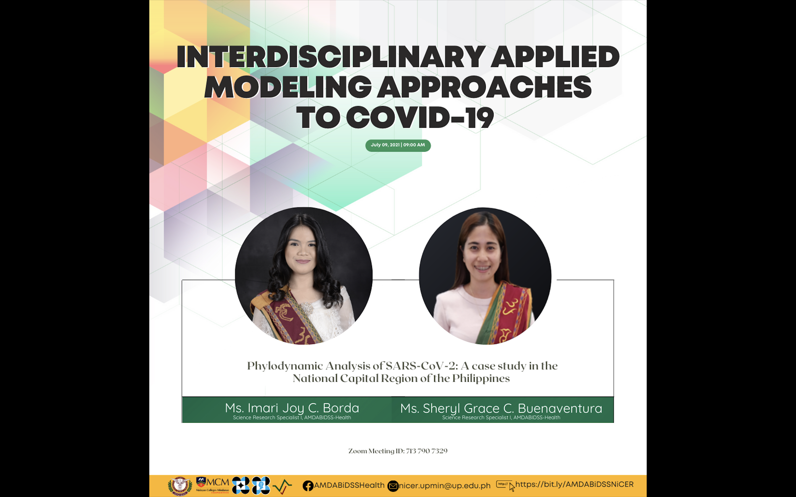
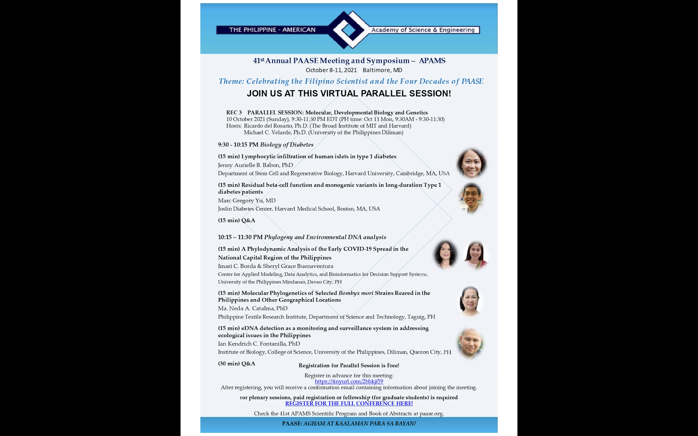

De La Salle University Research Congress 2021
Online via Zoom
2021 July 7-9
This talk was part of the mini-symposium participated by our group in AMBDABIDSS-Health. Together with Ms. Buenaventura, we talked about the use of phylodynamics in characterizing and understanding the dynamics of COVID-19 in the Philippines. We discussed the framework of phylodynamics – the data it needs, the general processes, and how Bayesian statistics and numerical approximation come into play. A copy of our presentation can be found here.

41st Annual PAASE Meeting and Symposium
Online via Zoom
2021 October 11
Under the Rec 3 Parallel Session (Molecular, Developmental Biology, and Genetics), Ms. Buenaventura and I talked about our ongoing paper entitled “A Phylodynamic Analysis of the Early Covid-19 Spread in The National Capital Region of the Philippines”. A copy of our presentation can be found here.